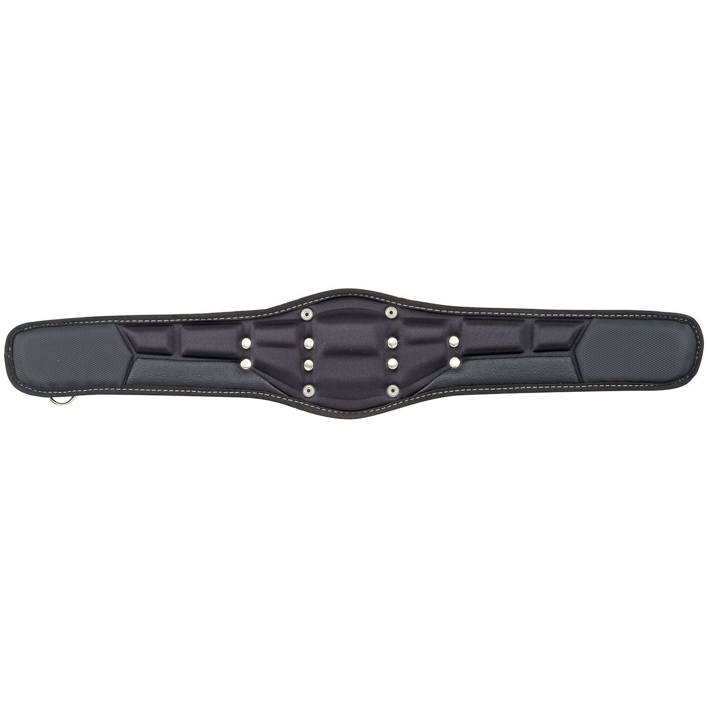
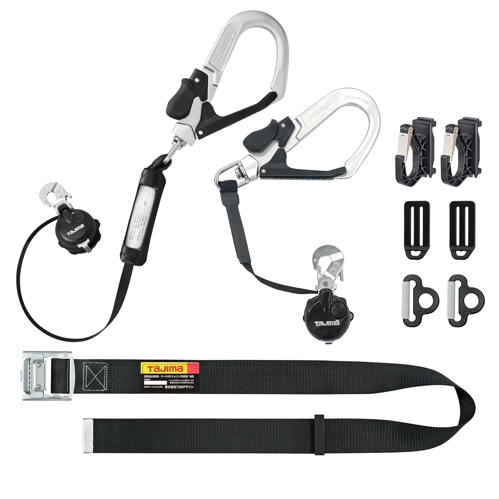
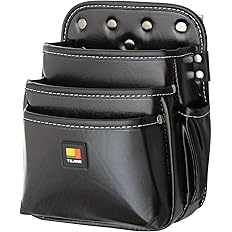
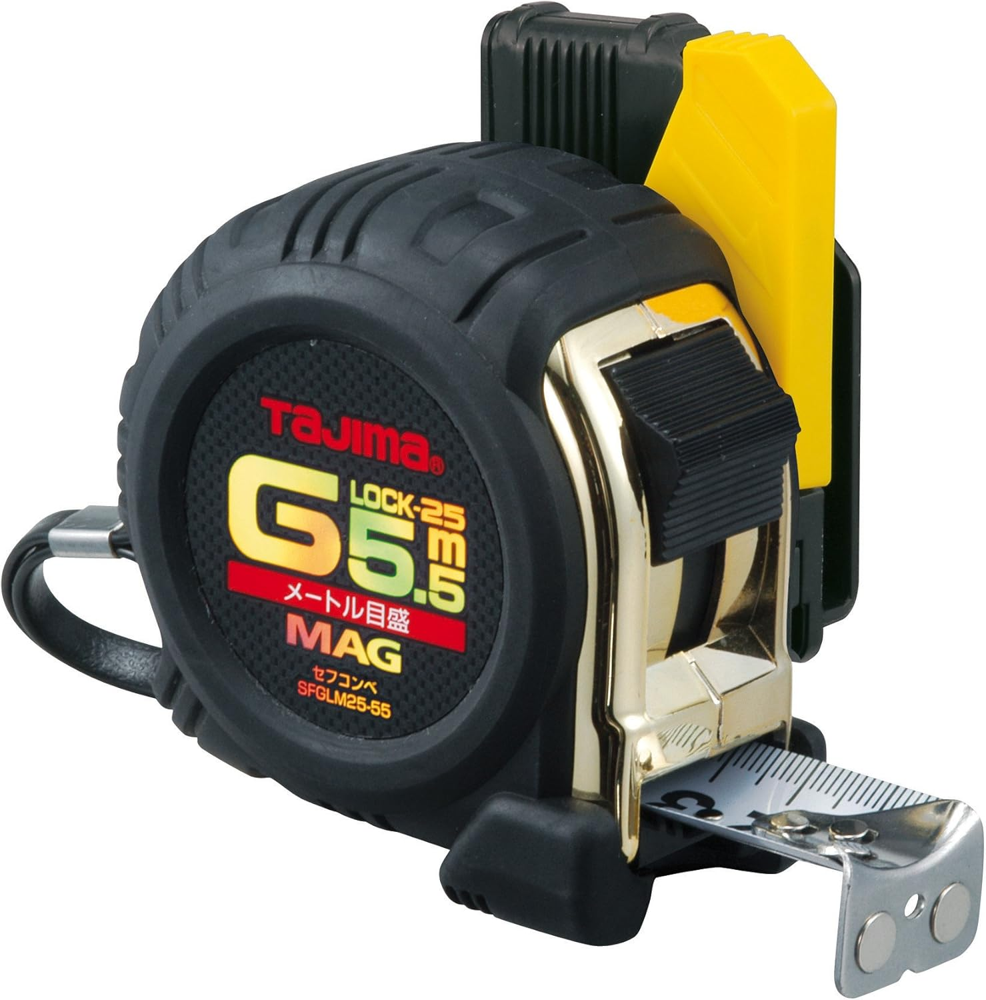

【現場で使ってる】電気工事の腰道具一式を紹介
電気工事の現場で実際に使っている腰道具を紹介します。
自分はタジマの胴ベルトをベースにして、腰袋・工具差し・コンベックスを付けて使っています。
腰道具は人によってかなり好みが出ますが、 自分は「クッション性」「動きやすさ」「必要な物だけ付けること」を重視しています。
この記事では、実際に今使っている物だけをベースに、 どういう位置に何を付けているかも含めて分かりやすくまとめています。
※電気工事士が実際に使っている腰道具構成をそのまま紹介しています。
迷ったらここから選べばOK
腰道具は全部一気に見るより、まず何を先に揃えるかで選ぶと分かりやすいです。
自分の使い方でざっくり分けると、まずはこの見方でOKです。
迷ったら、まずはベルトを土台にして、必要な物を少しずつ足していく形がかなり分かりやすいです。
腰道具は「ベルト」と「付け方」がかなり大事です
腰道具は、袋や工具差し単体よりも、まずベースになる胴ベルトがかなり大事です。
クッション性が弱いと長時間でしんどくなりやすいですし、配置が悪いと動きにくくなります。
自分はクッションの大きい胴当てベルトにして、背中側に腰袋、右手側に工具差し、左手側にコンベックスを付けています。
この形だとかなり使いやすいです。
これからそろえる人や、今の腰道具がしっくりきていない人は参考にしてみてください。
今の自分の腰道具の組み方
自分はタジマの胴当てベルトCRX800をベースにしています。
クッションが大きくて、腰への当たりがかなり楽です。
背中側には着脱式腰袋3段大、右手側には4本差しの工具差し、左手側にはコンベックスを付けています。
必要な物を使いやすい位置に付けるだけで、かなり作業しやすくなります。
2m以上の高所作業ではランヤードが絶対必要になるので、
新規格対応の胴ベルト型ランヤードも使っています。
巻き取り式なので、動きを制限されにくいのもかなり使いやすいです。
『タジマ 安全帯 胴当てベルト CRX800 800mm』

クッション性を重視したい人にかなり使いやすい胴当てベルト
この工具の特にいいところ
自分はこのクッションの大きい胴ベルトにしています。
腰への当たりがかなり楽で、ベースにするベルトとして使いやすいです。
まずはベースになる胴ベルトをしっかり選びたいなら、このタイプはかなり使いやすいです👇
腰道具は袋や差しを何にするかも大事ですが、
まず土台になる胴ベルトが合っていないと使いにくくなります。
その点、この胴当てベルトはクッションが大きくてかなり楽です。
長時間付ける物だからこそ、こういう当たりの良さはかなり大事だと思っています。
自分はベースをこれにしてから使いやすさを感じています。
- クッションが大きくて腰が楽
- 腰道具のベースとして使いやすい
- 長時間でも当たりがやさしい
『タジマ 新規格安全帯 胴ベルト型 巻取り式ランヤード 2丁掛け』

2m以上の高所作業なら絶対必要になる新規格ランヤード
この工具の特にいいところ
2m以上では高所になってくるので絶対必要なのがランヤードです。
これは新規格に適合していて、巻き取り式で動きを制限されることが少ないです。
高所作業があるなら、ランヤードはしっかりした物を選んだ方が安心です👇
高所作業では安全面が最優先になるので、ランヤードはかなり大事です。
これは新規格に適合しているので、その点でも安心しやすいです。
さらに巻き取り式なので、作業中に引っ張られっぱなしみたいになりにくく、 動きを制限されにくいのが使いやすいところです。
- 2m以上の高所作業で必須
- 新規格対応で安心しやすい
- 巻き取り式で動きやすい
『タジマ セフシステム 着脱式腰袋 3段大 SFKBN-3L』

背中側に付けて使っている着脱式腰袋
この工具の特にいいところ
自分はこの袋を背中側に付けています。
水気に強い高密度ナイロンで、着脱式なのもかなり使いやすいです。
メインの袋を使いやすい位置に付けたいなら、このタイプはかなり便利です👇
腰袋は何を入れるかも大事ですが、どこに付けるかもかなり大事です。
自分は背中側に付けていますが、この位置だとかなり使いやすいです。
セフシステムで着脱できるので、その点もかなり便利です。
必要に応じて付け替えしやすいのはかなり助かります。
- 背中側に付けて使いやすい
- 着脱式で便利
- ナイロン製で扱いやすい
『タジマ セフシステム 着脱式工具差し 4本差し SFKSN-P4』

右手側に付けてドライバーを持ち歩いている工具差し
この工具の特にいいところ
右手側に付けて、ドライバーを刺して持ち歩いています。
よく使う工具をすぐ取れる位置に置けるのがかなり便利です。
ドライバーをすぐ取り出したいなら、この4本差しはかなり使いやすいです👇
工具差しは、よく使う工具をすぐ出せる位置に付けるのがかなり大事です。
自分は右手側にこれを付けて、ドライバーを持ち歩いています。
動線が良くなるだけで作業のしやすさはかなり変わります。
よく使う物ほど取りやすい位置にある方がかなり楽です。
- 右手側に付けて使いやすい
- ドライバーをすぐ取り出せる
- よく使う工具の持ち歩きに便利
『タジマ セフコンベGロックマグ爪25 SFGLM2555BL』

左手側に付けているコンベックス
この工具の特にいいところ
左手側にはコンベックスを付けています。
よく使う物なので、すぐ取れる位置にあるとかなり便利です。
コンベックスを腰に付けて使いたいなら、この系統はかなり使いやすいです👇
コンベックスは現場でかなり出番が多いので、腰に付けてすぐ使える方がかなり楽です。
自分は左手側に付けています。
必要な物を必要な位置に付けるだけで、作業効率はかなり変わります。
コンベックスの位置もかなり大事だと思っています。
- 左手側に付けて使いやすい
- 出番の多い工具をすぐ取れる
- 腰道具の動線を作りやすい
セフホルダーについて
上の袋や工具差しを付けるのに使っているのがセフホルダーです。
下の2つは付属なので小さめに紹介しておきます。
- タジマ セフ後付ホルダー右用 メタル SF-MHLD
- タジマ セフホルダー胴ベルト用 金属 左用 SF-MLHLD
今の自分の腰道具構成まとめ
ベルトを土台にして、使う物を必要な位置に付けています。
| 道具 | 付けている場所 | 特徴 |
|---|---|---|
| 胴当てベルト CRX800 | ベース | クッションが大きく、腰がかなり楽 |
| 巻取り式ランヤード | 安全帯側 | 高所作業で必須。動きを制限されにくい |
| 着脱式腰袋 3段大 | 背中側 | メイン袋として使いやすい |
| 着脱式工具差し 4本差し | 右手側 | ドライバーをすぐ取れる |
| コンベックス | 左手側 | 出番が多く、すぐ使いやすい |
ごちゃごちゃ付けすぎるより、必要な物を使いやすい位置に付ける方がかなり使いやすいです。
自分はこの形がかなりしっくりきています。
まずそろえるならベルトからでOKです
腰道具は袋や差しも大事ですが、まずは土台になるベルトがかなり大事です。
自分はクッション性を重視してこの胴当てベルトにしています。
腰道具を組むなら、まずここから考えると分かりやすいです。
次に合わせて見たい工具


※当サイトはAmazonアソシエイト・プログラムに参加しており、適格販売により収入を得ています。